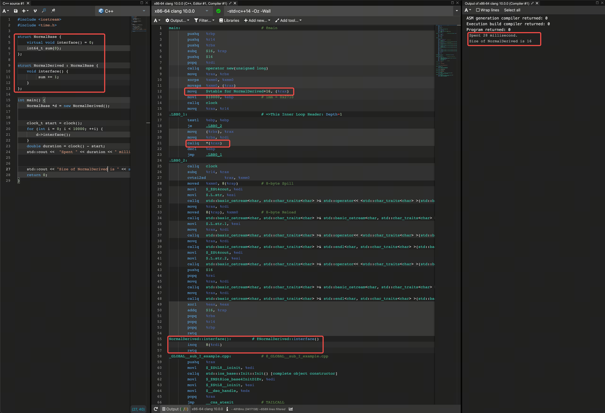
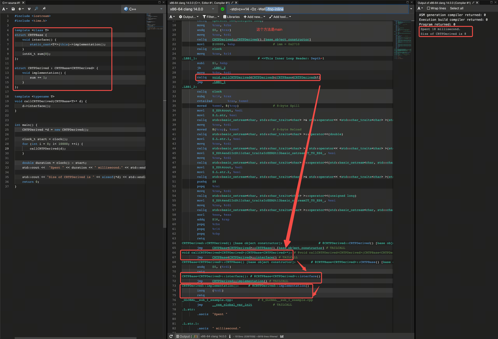
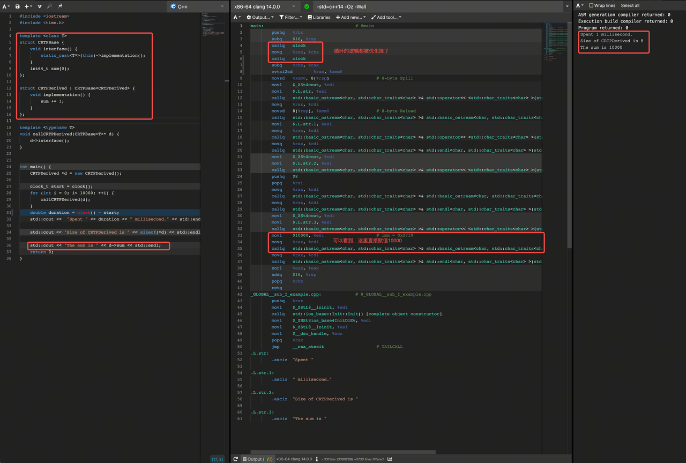
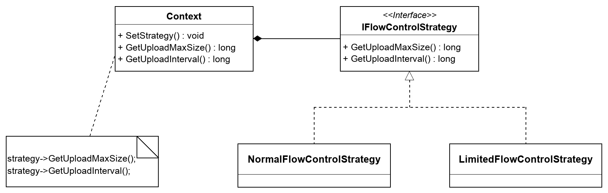
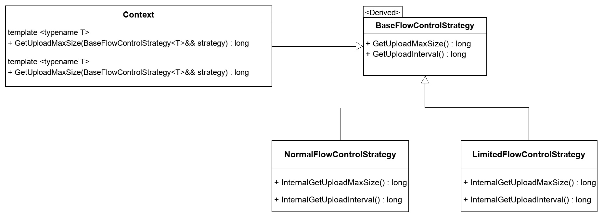
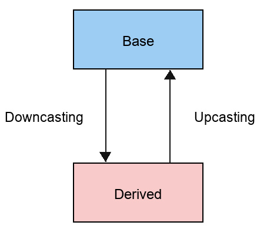
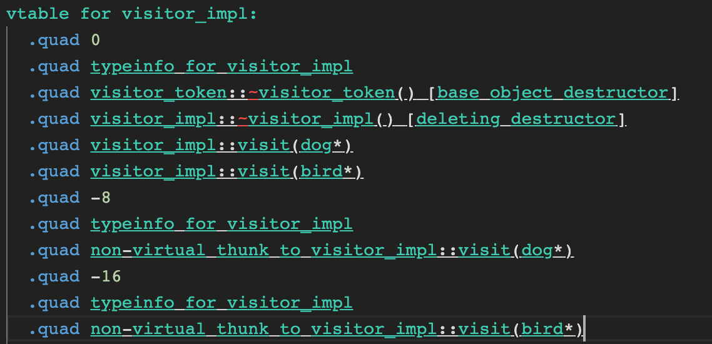

背景
最近在写一些C++代码的时候，遇到了一些代码重复性问题，在思考如何通过模板去解决这些问题的时候，我想到了CRTP，一个不怎么正经的继承。
什么是CRTP ？
CRTP全称Curiously Recurring Template Pattern，翻译过来是「奇异递归模板模式」，是C++模板编程的一种惯用方法。这是由James Coplien在1995年提出的一项技术，它的特点是：
- 继承自模板类；
- 把派生类作为基类的模板参数；
CRPT的一般形式如下：
1 | template <typename T> |
在我有限的知识仓库里，大概没有第二种语言可以这么书写了。。。
那么问题来了，为什么要这么实现呢？为什么又可以这么实现呢？
这里通过以下代码来说明：
1 | template <class T> |
看到这里，估计很多同学已经在思考“现在和未来如何穿梭”的事情了，因为代码看起来很怪异，Derived看上去感觉像是在继承自己一样，而且Derived还没声明完就可以被拿来使用。。。
通常来说，基类模板可以利用“虽然成员函数很早就被声明了，但是直到其被派生类继承才会被实例化”这一事实，在基类模板的成员函数中访问派生类的方法。
在上面的代码中，Base<Derived>::interface()，虽然是在Derived之前就被声明了，但在它被实际调用之前，并不会被编译器实例化，而真正的实例化发生于Derived声明之后，此时Derived::implementation()的声明，对于Base<Derived>::interface()实现来说是已知可见的。
考虑一个没有虚函数的基类。 每当基类调用另一个成员函数时，它总是会调用自己的基类函数。 当我们从这个基类派生一个类时，我们继承了所有未被覆盖的成员变量和成员函数（没有构造函数或析构函数）。 如果派生类调用一个继承函数，然后该函数调用另一个成员函数，则该函数将永远不会调用派生类中的任何派生或重写的成员函数
但是，如果基类成员函数对所有成员函数调用使用
CRTP，则可以在编译时选择派生类中的重写函数，
这在编译时有效地模拟了虚拟函数调用系统，而没有大小或函数调用开销（VTBL
结构和方法查找、多继承 VTBL
机制）的成本，缺点是无法在运行时做出此选择，有人也称这种技术为“静态多态”。
这里有2点需要注意：
- 类模板是模板，类是类，这里的
Base只是模板； - 这里的基类是
Base<Derived>，不是Base；
这里有几个触及的灵魂的问题，大家可以思考下：
Base<Derived>基类中有implementation方法的实现吗？以下代码可以通过编译吗？
1 | CRTPBase<CRTPDerived> base; |
Derived究竟是从Base<Derived>继承了什么，还是在遵循什么承诺？
CRTP 性能如何 ？
实验环境：x86-64 clang 14.0.0 -std=c++14
虚函数耗时

CRTP耗时（禁止内联）

CRTP耗时（内联）

指标对比
| 类型 | 虚函数 | CRTP（非内联） | CRTP（内联） |
|---|---|---|---|
| 耗时 | 28ms | 18ms | 1ms |
| 对象大小 | 16B | 8B | 8B |
可以看到，在demo实验中，CRTP的实现方式在开启内联的情况下（一般在release下都是默认开启的），不仅速度快，而且对象占用内存小（虚函数的vptr多占8个字节）。对于一些对性能要求高的场景不妨一试。当然这里的性能对比特别简单，更专业的性能对比需要benchmark
当 CRTP 碰到设计模式
那么CRTP可以用来做些什么呢？又应该如何来应用呢？我们不妨从经典的一些设计模式讲起。话说回来，当CRTP遇上设计模式时，一些事情变得有意思起来。
单例模式
传统模式下，C++应该怎么实现单例呢？
1 | class Singleton |
C++11规定了local static在多线程条件下的初始化行为，要求编译器保证了内部静态变量的线程安全性。在C++11标准下，《Effective C++》提出了一种优雅的单例模式实现，使用函数内的
local static
对象。这样，只有当第一次访问getInstance()方法时才创建实例。这种方法也被称为Meyers' Singleton。C++0x之后该实现是线程安全的，C++0x之前仍需加锁。关于C++单例更多的实现方式在这里：https://zhuanlan.zhihu.com/p/37469260，这里不再展开。
如果另一个类也需要实现单例呢？笨办法就是把上面的代码再抄一遍，但是如果用CRTP来实现单例呢？
1 | template <typename Derived> |
如代码所示，我们把派生类当成了模板参数，当实现单例的时候，直接调用派生类的构造函数，这里使用了：
- 变参模板
variadic template，可以支持任意参数的传递。想想看，如果在OC里面实现1个支持任意参数的单例，是不是并不容易？ std::call_once和std::once_flag，是不是和OC的dispatch_once和dispatch_once_t很像？
在这样的情况下，当任何一个类想要自己的单例的时候，只需要简单地继承Singleton，并把自己作为模板参数传入即可。
1 | class TestService : public Singleton<TestService> { |
1 | int main() { |
- 子类需要将自己的构造函数声明为
private；- 子类中需要声明友元类：
Singleton<TestService>
简单工厂模式
1 | template <typename Derived, bool ThreadSafe = true> |
同样，想需要实现简单工厂的类只需要简单地继承自Factory，然后把自己作为模板参数传入即可。另外，这个简单工厂内部需要把对象以key-value的形式存下来，所以需要调用侧传1个key进去。
1 | class SomeService : public Factory <SomeService> { |
这个代码调用起来比较难受，到处都得传1个不需要的key值。那么改造一下吧
1 | template <typename ...Args> |
改造的核心思想就是：要获取到第1个参数，并根据参数的类型获取最终想要的key值。这里通过DecayFirstParam获取到了参数列表中的第1个参数，这个叫参数解包（有点像萃取技术）。由于第一个参数的类型不能够确定，这里采用了std::enable_if，分别对项目中具体使用到的ModuleEnv、Env和std::string几个类型进行了方法重载处理。
1 | template <typename T, typename ...Args> |
除此之外，这里还使用了万能引用和完美转发技术，但是这不是本文要讨论的内容，可以先忽略，详情可以参考：https://zhuanlan.zhihu.com/p/50816420
策略模式
这里以一个流量控制的案例来说明：假设对流量控制需要采取2种不同的模式：正常模式和限流模式，那么传统的UML图如下图所示

代码也很简单易懂
1 | class IFlowControlStrategy { |
如果使用CRTP来实现的话：

- 先定义
1个CRTP基类BaseFlowControlStrategy; - 再根据
2种策略定2个子类：NormalFlowControlStrategy和LimitedFlowControlStrategy; - 对外的接口则是模板方法
GetUploadMaxSize和GetUploadInterval。
1 | template <class Derived> |
注意这里的friend class
外侧调用
1 | long Context::GetUploadInterval() { |
可以发现，对外的接口是个模板方法，所以这注定了它和传统的OOP编程模式有些格格不入。
这个模式还有个别名：Policy-Based Class Design
克隆模式
当要通过基类指针获得对象的拷贝时，通常做法是加个虚的Clone函数，而用CRTP可以避免在每个派生类中重复这个函数，只要派生类允许复制构造即可
1 | // Base class has a pure virtual function for cloning |
访问者模式
访问者模式本身就比较复杂，这里还要结合CRTP，所以整体会比较困难，这里借助modern
c++设计模式系列（一）的例子进行说明.
假设有一个动物的继承体系，有dog,
bird派生于动物基类animal，基类的纯虚函数是move。随着需求的变化，我们给dog添加了swim，给bird添加了fly方法。因为dog是不能fly的，bird是不能swim的，所以这2个方法不能放到基类animal中。
1 | struct animal{ |
那么现在需要通过animal对象来调用swim和fly方法，怎么做？
Downcasting
很常见的办法就是downcasting。

1 | void test(animal* anim) { |
相信大部分人都见过类似的代码，甚至也写过这样的代码，包括我自己，但是这种写法的确会很糟糕：
- 随着需求的变化，这里的
if-else会愈来愈膨胀； dynamic_cast很低效，应该尽量避免；
visitor模式上场
这个时候轮到visitor模式上场了：visitor模式可以在不修改被访问对象的情况下，添加新的访问行为，通过visitor模式我们可以消除之前的
dynamic_cast了
1 | struct visitor{ |
这是经典的visitor模式的实现，对于被访问者继承体系animal体系来说，访问animal的方式可以通过visitor自由增加了，而animal体系是不会感知到的，换句话说，在不修改被访问者的前提下，你可以给被访问者添加新的访问行为，这很棒。
这也是一个经典的双分派的visitor模式，所谓双分派就是两次分派，有两次虚函数调用：
- 第一次虚函数调用是
animal::accept纯虚方法的调用； - 第二次虚函数调用是
visitor::visit纯虚方法的调用。
CRTP介入
有没有看到1个令人讨厌的方法？对，就是accept，dog和bird都写了一遍，且一模一样。我们来照着前面的克隆模式，消除下这个重复方法：把accept挪动到继承自animal的visitable中，其它的派生类从现在开始不再直接继承animal，而是继承visitable
1 | //crtp |
瞬间感觉派生类清爽了很多，有没有？
魔法来了
如果此时再添加1个子类fish，那么vistor基类就得新增1个虚函数，那么之前的派生类都得修改，所以这段代码是不稳定的，也违反了开闭原则。问题的原因是animal依赖了visitor，visitor又依赖了具体的animal类型。SOLID原则时刻告诫我们，要依赖抽象，不应该依赖具体。
所以可以把visitor定义为1个模板类，这样animal就依赖了1个泛型类型，而不是具体的类型。考虑到模板的传染性，为了避免animal也得模板化，这里又引入了visitor_token基类，可以看到visitor_token就是一个辅助基类，里面除了默认的虚析构函数，啥都没有，但是这已经足够了。
1 | template<typename T> |
到此时，visitor和animal都不再依赖具体，而是依赖于抽象，从而达到了解耦的目的。
本次修改最大的魔法来自于：MultipleVisitor利用Using-declaration来自动生成一个访问者的继承体系，而不是像之前一样，一个一个定义visitor派生类了，这样对代码做了简化，也可以很方便地定义新的访问者体系了，只要定义一个新类型就行了。
这里可能稍微有些费解，这里不妨把using MyVisitor = MultipleVisitor<dog, bird>的等价代码展开：
1 | // 1. 先把2个接口类特化 |
可以看到1行代码替代了15行代码的工作，可以体会下模板的魅力！
问题
到此为止，有没有发现有什么问题？
- 最终的方案并没有彻底消除
dynamic_cast，可以看到accept里面仍然在使用dynamic_cast
1 | template<typename T> |
- 代码还在持续使用虚函数表和虚函数指针，可以看下
visitor_impl的虚函数表

可以发现，最终的“优雅代码”离我们最初设定的目标还是有一定的偏移，但是鱼和熊掌不可兼得，总得做一些tradeoff，但是这些tradeoff是值得我们付出的。
CRTP 实际应用
std::enable_shared_from_this
1 | template<class _Tp> |
在使用智能指针的情况下，如果想使用this的智能指针，必须要按照Good的方式去实现：继承自std::enable_shared_from_this，并把自己作为模板参数。
1 | // correct |
Clickhouse
https://github.com/ClickHouse/ClickHouse/blob/master/src/AggregateFunctions/IAggregateFunction.h
1 | class IAggregateFunction : public std::enable_shared_from_this<IAggregateFunction> |
1 | /// Implement method to obtain an address of 'add' function. |
1 | /// Implements several methods for manipulation with data. T - type of structure with data for aggregation. |
1 | /// Simply count number of calls. |
总结
本文主要讨论了：
CRTP的概念- 和虚函数做了性能对比
- 通过若干设计模式讲了一些具体的用法
- 实际应用举例
不难发现：
- CRTP的优点：性能高、代码复用程度高，比单继承容易拓展（CRTP+多继承）
- CRTP的缺点：理解起来比较晦涩，和传统的OOP编程有些格格不入，使用模板，传染性强。
后记：CRTP的幽灵兄弟
1995年的CRTP“这杯陈酿”是不是品的如痴如醉？
此时，不妨来看看CRTP的幽灵兄弟，Mixin。
Mixin 是一种将若干功能独立的类通过继承的方式实现模块复用的
C++ 模板编程技巧。其基本做法是将模板参数作为派生类的基类:
1 | template<typename... Mixins> |
这里以Point举个示例：传统方式下，如果要扩展，一般以Point为基类，派生出LabelPoint，ColorPoint，LabelColorPoint等子类。可以看到LabelColorPoint用到了菱形继承，必须使用虚继承方式
1 | struct Point { |
而Mixin方式则是将Label、Color定义为不同的类，最后通过组合的方式形成LabelColorPoint类，像搭积木一样，完成功能复用。
1 | template <typename... Mixins> |
1 | int main() { |
之所以称Mixin为CRTP的幽灵，主要是因为二者的继承从形式上看正好是相反的：
CRTP是把派生类作为模板参数，并且基类模板内部调用子类的功能；Mixin则是把基类作为模板参数，通过“组合的继承方式”，派生类模板内部调用基类的功能；
参考文档
- https://en.wikipedia.org/wiki/Curiously_recurring_template_pattern
- https://eli.thegreenplace.net/2013/12/05/the-cost-of-dynamic-virtual-calls-vs-static-crtp-dispatch-in-c/
- https://zhuanlan.zhihu.com/p/50816420
- http://ot-note.logdown.com/posts/805904/wtl-atl-cwindoesimp-composition-notebook
- https://siddswork.com/cpp-design-pattern-policy-based-class
- https://zhuanlan.zhihu.com/p/460825741